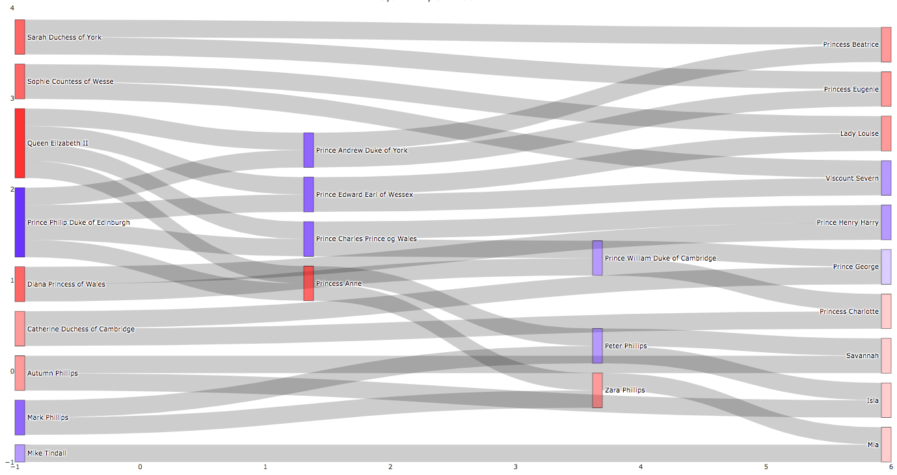

|

Sankey Diagram of Royal Family of Elizabeth II
|
Vis tool: plotly(R)
Description:
This Sankey diagram shows relationships of family Elizabeth II. Red represents female and blue represents male. Transparency indicates generation, which means that senior the person has a darker color. Unlike the normal family tree, levels of location are not an indication of generation. In this Sankey diagram, people on the left side are either root of family tree (Queen Elizabeth II and Prince Philip) or outsiders (people who not born in the royal family).
|
Code and Data